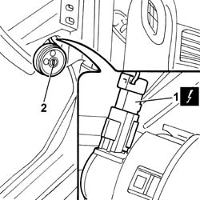

5580C26 passenger air bag deactivating switch - r r
- Path
- Procedures > 55 ELECTRICAL EQUIPMENT > 5580 SPECIAL ACCESSORIES > 5580C AIR BAG SYSTEM > 5580C26 passenger air bag deactivating switch - r r
- Kind
- repair procedure (removal / refitting; the operation number is the code)
- Applies to
- all engines; all production periods
- Interactive page
- https://sloeber94.github.io/elrnDB-lThss/en/#/79701
Applies to: all engines; all production periods
 Removing
Removing
 Refitting
Refitting- Open the boot and disconnect the negative battery terminal.
See in Op. 7040A45 INSTRUMENT PANEL RIGHT SIDE TRIM - R.R.
- Release the switch from the housing in the instrument panel.
1. Disconnect the electrical connector.
 | Description | Connector |
|---|---|---|
1 | Passenger Air Bag disabling switch | H075 |
2. Remove the passenger Air Bag disabling switch.

Applies to: all engines; all production periods
Refitting
Removing- Check that the switch is working properly.
- Connect the passenger Air Bag disabling switch electrical connector.
| Description | Connector |
|---|---|---|
. | Passenger Air Bag disabling switch | H075 |
- Fit the switch in the special housing in the instrument panel.
See in Op. 7040A45 INSTRUMENT PANEL RIGHT SIDE TRIM - R.R.
- Connect the negative battery terminal.
Topics linked from this page (1)
Topics that link to this page (13)
- 5010B56 Duct between climate control casing and air duct to rear seats - R.R.
- 5010D27 UPPER MIXED AIR TEMPERATURE SENSOR (one) left or right - R.R. following electrical circuit check
- 5010D28 LOWER MIXED AIR TEMPERATURE SENSOR (one) left or right - R.R. following electrical circuit check
- 5040C10 Air conditioning CASING - R.R.
- 5040D86 air conditioner right air mixture flap control motor - r r
- 5040D94 Air conditioning upper left air distribution flap control motor (DEFROST) - R.R.
- 5040D96 Air conditioning upper right air distribution flap control motor (DEFROST) - R.R.
- 5505C26 ENGINE COMPARTMENT built in wiring - R.R.
- 5505C31 Under-FACIA WIRING - R.R.
- 5505C41 PASSENGER COMPARTMENT built in WIRING - R.R.
- 7040A10 Instrument facia TRIM - R.R.
- 7040A95 Left or right reinforcement crossmember (one), dashboard and bodyshell supporting crossmember - R.R.
- 7040L17 Passenger compartment front floor carpet - R.R.